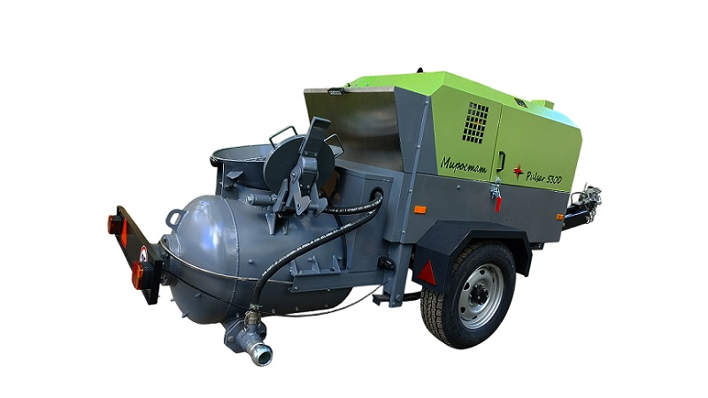
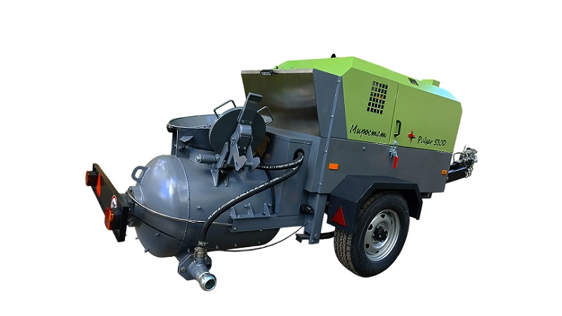

Пневмонагнетатели Миростат для стяжки полов

 

Пневмонагнетатель Pulsar применяется для подъёма на этажи цементно-песчаных растворов и легких бетонов, предназначенных для устройства стяжки пола. Пневмонагнетатель оборудован смесителем принудительного действия, в котором можно готовить раствор путем смешивания компонентов или использовать готовый раствор. Подавать можно сухие, полусухие и жидкие растворо-бетонные смеси с размером фракции твердых включений до 16 мм на высоту до 30 этажей. Раствор подаётся по магистрали рукавов под давлением сжатого воздуха при помощи встроенного дизельного компрессора высокой производительности.
Технические характеристики пневмонагнетателя Pulsar 530 D
| Название | Значение |
|---|---|
| Производительность по подаче раствора | до 4,5 м3/ч |
| Высота / длина подачи | до 80 метров / до 160 метров |
| Рабочее давление компрессора | 8,0 атм |
| Производительность компрессора | 5,2 м3/мин |
| Максимальная крупность фракции | 16 мм |
| Объём бункера-смесителя геометрический | 300 л |
| Объём бункера-смесителя по раствору | 250 л |
| Диаметр подающего рукава | 65 мм |
| Двигатель дизельный | 41 кВт, 4 цил., атмосферный, с жидкостным охлаждением |
| Исполнение | Передвижной, на одноосном шасси с регулируемым по высоте дышлом |


Основные преимущества Pulsar 530 D
-
Отличная производительность
— Компрессор с прямым приводом от мощного 4-цилиндрового дизельного двигателя
-
Экономия
— Доступная стоимость машины
-
Нержавеющая сталь
— Рабочая поверхность и зона примыкания смесителя к кузову машины сделаны из нержавеющих материалов
-
Удобный доступ
— Все компоненты машины скомбинированы и удобно расположены внутри машины, обеспечивая легкий доступ
-
Большой объём
— Смесительный бункер увеличен до 300 литров
-
ЭПСМ
— Смесительный бункер увеличен до 300 литров
-
И много другого!
— Техника оборудована гидравлической тормозной системой, системой стояночного тормоза, светотехникой, имеет зацепное устройство "кольцо" или "шар". Рекомендуемая скорость до 25 км/час.
Система безопасности крышки бункера-смесителя
Разработана нашими инженерами на основе многолетнего опыта обслуживания и эксплуатации пневмонагнетателей
Централизованная система смазки

Автоматическая подача смазки в подшипниковые узлы смесителя
Регулируемое по высоте прицепное дышло

Позволяет без особых усилий настроить необходимую высоту зацепления для буксировки
Пружинный усилитель крышки смесителя

Облегчает процесс многочисленных операций поднятия/опускания крышки бункера-смесителя
Каналы смазки в пальцах замка крышки смесителя
Разработаны нашими инженерами, позволяют существенно снизить износ и количество обращений в сервисные службы
Металлические арки колес

Позволяют использовать их как прочную горизонтальную поверхность